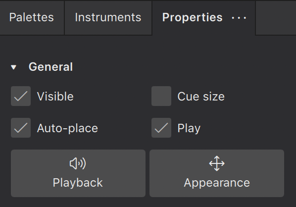
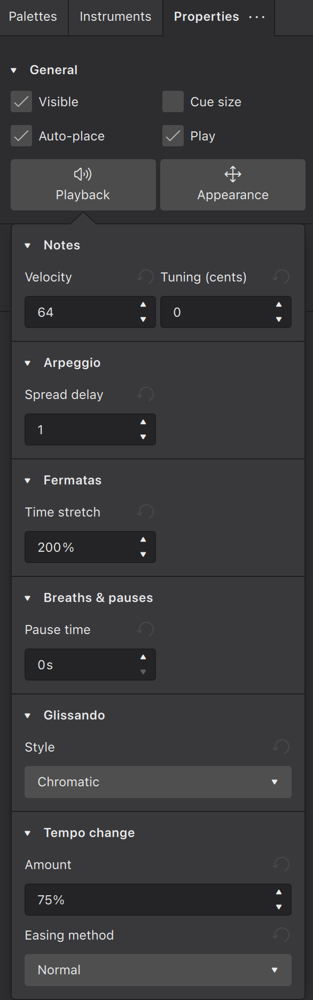
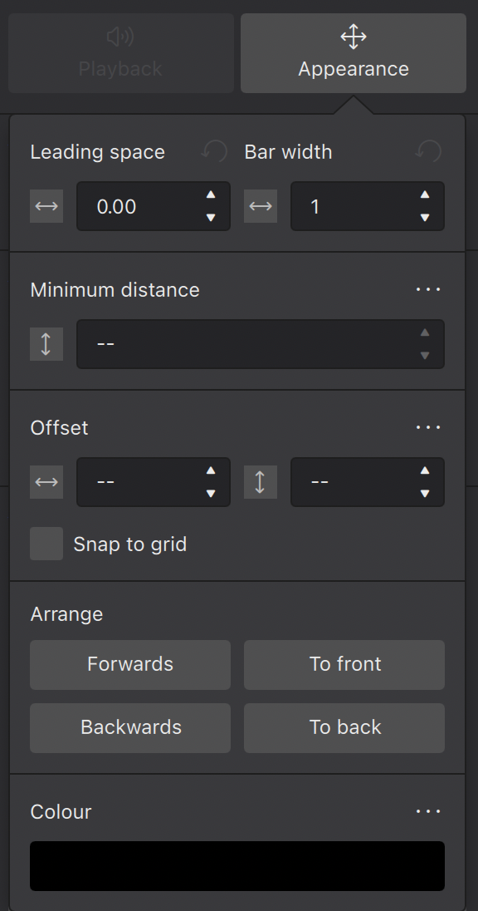

属性面板
属性（Properties）面板显示你在乐谱中所选对象的设置。它在 MuseScore 2 和 3 中被称为“检查器”（Inspector）。
你可以一次选择一个对象（比如一个力度记号），或一次选择多个对象（比如一个力度记号、一个符头和一条力度变化线）。如果你选择的对象中有任何包含可编辑设置的，属性 面板就是找到它们的地方。
关于 属性 面板很重要的一点是：默认情况下它只影响你选择的对象，所以改变一条力度变化线的外观不会改变乐谱中所有的力度变化线——只会改变你选中的那些。不过，对于大多数设置，你可以 保存为乐谱的默认样式。
访问属性面板
- 打开 乐谱 标签页
- 按 默认键盘快捷键 F8，或单击屏幕左侧的 属性 标签页。

全局设置
这是当你的乐谱中 没有选中任何内容 时 属性 面板的外观。所有这些设置都会影响你的 整个 乐谱（而不仅仅是单个元素）：

显示
乐谱外观
- 空谱表 隐藏/显示系统内没有记谱音乐的谱表。此设置与 样式 对话框中的 隐藏系统内的空谱表 设置相对应。
- 页面设置 打开 页面设置 对话框。与 格式→页面设置 相同。参见 模板与样式。
- 样式设置 打开 样式 对话框。与 格式→样式 相同。参见 模板与样式。
常规设置
这些设置在乐谱中有任何内容被选中时可见。

可见
单击此框可隐藏/显示选中的元素，或使用键盘快捷键 V。
使用此功能隐藏元素，使其不出现在导出或打印的乐谱中。例如，当应用速度标记或力度记号仅仅是为了影响 MuseScore 中的播放时，这会很有用。使用 属性 中的 不可见 开关（在未选中任何内容时）在乐谱视图中显示或隐藏这些隐藏元素（隐藏元素会以较浅的色调渲染）。
自动放置
默认情况下通常勾选此功能，它会根据 MuseScore 的垂直和水平避让算法定位所选对象。取消勾选 自动放置 可以更好地控制某些元素的位置。在 元素的定位 中了解此功能的更多信息。
提示音符大小
此功能用于创建小的 提示音符（cue notes）：即为演奏者提供的提示，指示另一位合奏/管弦乐队成员同时在演奏什么。勾选此框会使任何选中的音符变小，包括其符干和附着的符杠。
播放
勾选后，此属性允许播放所选元素。取消勾选 播放 可使该元素静音。
播放设置
播放 按钮显示所选元素的可编辑播放属性。

在 播放 按钮下方，如果所选元素有播放属性，则会显示出来。
力度
只有 音符 才有力度属性。有效范围是 1 到 127。此属性适用于使用 SoundFont 的乐器。
此属性对使用 Muse Sounds 的乐器无效。要改变使用 Muse Sounds 乐器播放的响度，参见 力度与强弱记号。
调音
用于以音分为单位调整音符的音高。只有音符才有调音属性。
外观设置

前置间距
这会改变所选元素的前置间距：即元素前方的空间。前置间距调整会应用到所有谱表，从而使同一时间位置的音符保持对齐。
小节宽度
这会按原始宽度的比例改变小节的宽度：例如 1.5 = 默认宽度的一倍半。
最小间距
这由自动放置避让算法使用，只适用于默认放置在谱表上方/下方的元素，如谱表文本、力度记号、指法、线条等。它设置所选对象与更靠近谱表（或谱表本身）的其他元素之间的最小距离（单位 sp.）。
偏移
新应用的元素会处于默认位置。水平/垂直偏移提供了一种比拖动或用键盘方向键移动更精确的元素定位方式。
吸附到网格
此功能允许你把拖动操作限制在所需距离的增量上。首先需要勾选 吸附到网格 框，然后按 配置网格 并设置所需的水平/垂直步进距离。
你可以根据需要勾选/取消勾选该框来打开/关闭 吸附到网格。
排列
此区域中的四个按钮控制重叠元素如何绘制。它们的作用如下：
- 向前 把所选元素移到下一个元素之前
- 向后 把所选元素移到下一个元素之后
- 置于最前 把所选元素移到 所有其他元素 之前。
- 置于最后 把所选元素移到 所有其他元素 之后，包括谱线之后。
颜色
单击此按钮可更改所选元素的颜色。选择预设或自定义颜色，或单击 + 按钮创建自己的颜色。创建的颜色会存储在右侧的自定义颜色列表中，以供日后参考。
文本对象内字符的属性
当 文本对象 被选中（选择的是对象而非字符）时，属性面板显示文本对象的格式设置。编辑这些属性可能会影响其中的所有字符。
当 文本对象 内的字符被选中时，属性面板显示字符的格式设置。编辑这些属性只会改变选中的字符。参见 格式化文本。
保存和恢复默认设置
更改任何给定设置后，你可以单击该设置旁的“三个点”菜单按钮，弹出菜单允许你 重置 该设置为乐谱默认值，或 保存为此乐谱的默认样式。后一个选项仅对与样式设置对应的属性可用，但其中包括本面板中的许多属性。